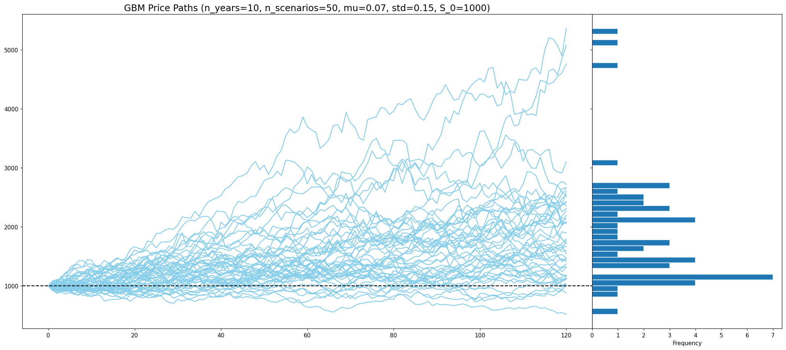
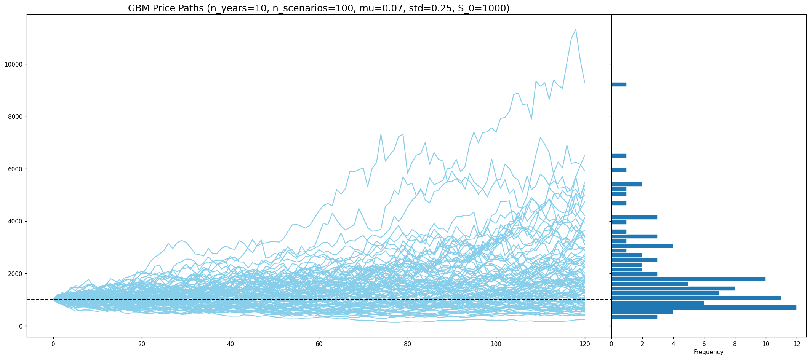
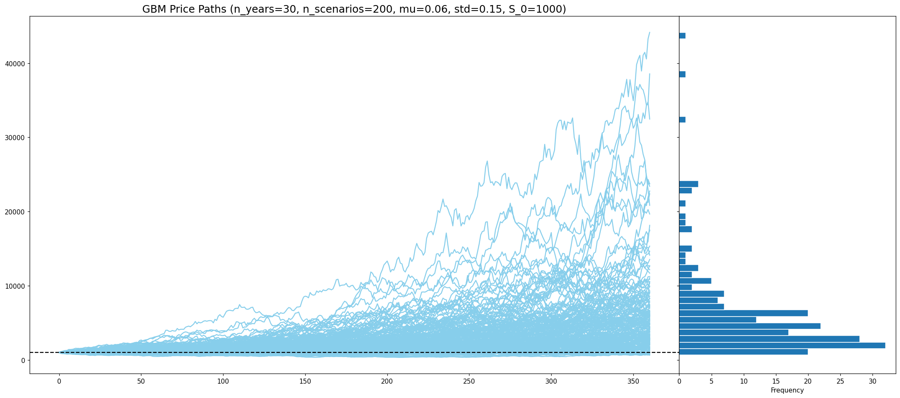

Monte Carlo simulation of asset price paths using GBM, with terminal wealth distributions.
This model simulates possible future price paths for an asset assuming it follows geometric Brownian motion — a common assumption in quantitative finance for stock prices. Each simulation draws random monthly returns, compounds them, and tracks a distribution of terminal (ending) values across many independent scenarios.



def gbm(n_years=10, n_scenarios=50, mu=0.07, std=0.15, steps_per_year=12, S_0=1000):
dt = 1 / steps_per_year
n_steps = int(n_years * steps_per_year)
rets = np.random.normal(
loc=(1 + mu) ** dt,
scale=std * np.sqrt(dt),
size=(n_steps, n_scenarios)
)
rets = pd.concat(
[pd.DataFrame(np.ones((1, n_scenarios))), pd.DataFrame(rets)],
ignore_index=True
)
return S_0 * pd.DataFrame(rets).cumprod()
Originally developed as a Jupyter notebook with interactive ipywidgets sliders for n_years, n_scenarios, mu, std, and S_0. The plots above are static renders at a few representative parameter sets, generated for display on GitHub Pages.